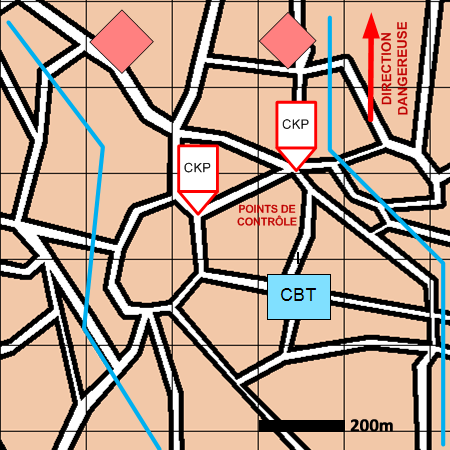

NIVEAU :Automate
ARME :Melee
MISSION :Animer Postes De Controle
Objectif principal
- Contrôler
- Détruire / Neutraliser
Modalités d'exécution
-
Rejoindre la ou les positions à armer ;
-
Pour chaque position, un élément construit le point de contrôle s'il n'existe pas déjà ;
-
Toutes les unités de mêlée se répartissent les points de contrôle et les animent ;
-
Les autres unités tombent en garde.
-
Si un terroriste passe le poste de controle alors il est identifié et capturé.
-
L'animateur a ensuite accès à l'ordre de conduite "déposer unité capturée" au niveau du pion pour déposer le terroriste à une position donnée.
Schéma de modélisation

Paramètres obligatoires
Fuseau : Zone de responsabilité.
Direction Dangereuse : Orientation privilégiée des capteurs.
Points de contrôle : Positions où le SGTIA va construire et animer les points de contrôle.
Pourcentage de foule à desarmer : Pourcentage de foule à désarmer (entre 0 et 100).
Paramètres optionnels
Nombre d'echelons (1 par défaut)
Ligne de début et fin de mission [LDM/LFM]